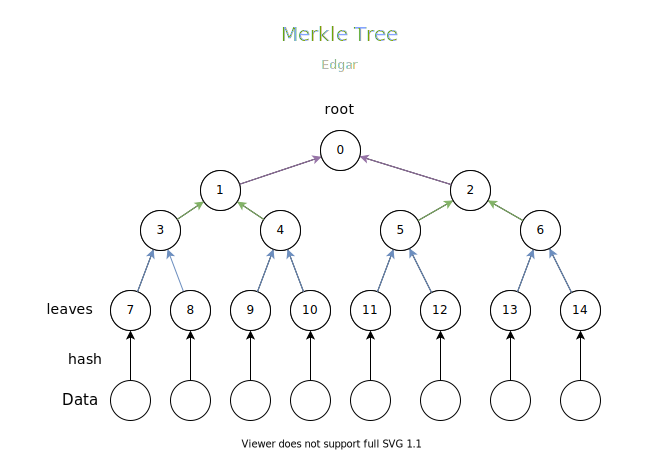
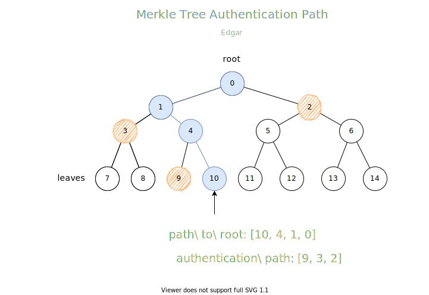
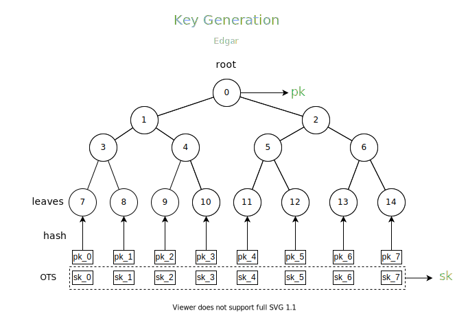

Merkle Tree & Merkle Signature Scheme
概念
Merkle Tree 又称 Hash Tree，实现一般为二叉树，当然也可以用多叉树实现，本质是一样的，WiKi 上也有相关介绍，点击这里传送。
树的叶子节点处存放数据的哈希值，其他的非叶子节点通过子节点进行构造，按照下方公式：
$$node_i = hash(node_{2i+1} || node_{2i+2})$$
其中，节点 $i$ 是节点 $2i+1$ 和 $2i+2$ 的父结点，$||$ 表示串接，或者简单的说拼接，比如 $a = 0001_2, b = 1100_2$ 则
$$ c = a || b = 00011100_2$$
Merkle Tree 的结构如下：
作用
Merkle Tree 主要有以下两个作用。
1. 校验数据的完整性
现在比如说有一个文件很大，并没有存放在单独的一台机器上，而是分布在各个网络主机上，如果我们想要获取到该完整的文件，必须从各个主机上获取，然后进行合并，但是我们如何保证获取的文件是完整的，没有丢失任何数据？
我们可以提供数据的摘要来确保。每一份文件块均含有一个摘要，我们获取到该文件块的时候重新计算摘要，并且与之进行匹配，如果摘要不相等，说明文件块不对，需要重新传输。
PS: 如果不需要防止主动攻击，比如消息篡改，使用 CRCs 等校验和算法即可。
但是这样，我们需要从可信方获取获取所有的摘要值，代价有点高。
更好的方式是采用 Merkle Tree，我们首先会从可信方获取到文件的根哈希值 $root$，在每一个主机发送的内容中会提供当前数据的摘要，以及在 Merkle Tree 中的 Authentication path (下文会提到)，下载完数据之后，会根据 Authentication path 计算根哈希值 $root^\prime$，如果和 $root$ 不匹配，说明该文件下载错误，进行错误处理，重试或者放弃下载，如果匹配，则会继续下载。
2. 减少签名中公钥的大小
在没有使用 Merkle Tree 之前，比如我们需要保存 $2^h \times n$ bits 的公钥，可以认为是树中的所有叶子节点，但是使用 Merkle Tree，公钥变成了树的根节点，也就是只需要保存 $n$ bits，在 $h$ 达到一定大小的时候，节约的空间大小十分可观。
Authentication path
Merkle Tree 中存在一个比较重要的概念：Authentication path，指的是，叶子节点到根节点经过的路径上的节点的兄弟节点集合。举个栗子，下面节点 $10$ 到根节点经过的节点有 $[10, 4, 1, 0]$，分别对应的兄弟节点为 $[9, 3, 2]$，即为节点 $10$ 的认证路径。
通过已知节点和 Authentication path，我们可以计算出根节点的值，比如上面的这个例子中，执行下面的步骤，即可求出根节点：
- 由 $10$ 和 $9$ 计算出 $4$ 的值
- 由 $4$ 和 $3$ 计算出 $1$ 的值
- 由 $1$ 和 $2$ 计算出根节点 $0$ 的值
Merkle Signature Scheme
Merkle Signature Scheme 由 Ralph Merkle 于 1979 年提出，简称 MSS，并不是一种单独的一种签名算法，而是整合了 Merkle Tree 和 OTS 形成的，论文见 A Certified Digital Signature。
下面按照三元组 $(GEN, SIG, VER)$ 对 MSS 签名系统进行介绍。
密钥生成($GEN$)
$$(pk, sk) \leftarrow GEN(1^k)$$
首先，我们需要确定树的高度 $h$，然后生成 $2^h$ 个 OTS 密钥对 $(X_j,Y_j)$，$j \in [0, 2^h-1]$。
依次计算值 $v_j = hash(Y_j)$，作为 Merkle Tree 的叶子节点，并且不断利用下方公式直至计算出根节点 (root) 的值，即为公钥 pk。
$$node_i = hash(node_{2i+1} || node_{2i+2})$$
私钥为 $2^h$ 个 OTS 私钥 $X_j$。
图示：
消息签名($SIG$)
$$ \sigma(M) \leftarrow SIG(M, sk)$$
对于输入的消息 $M \in \{0,1\}^*$，首先挑选出一个 OTS 密钥对，索引为 $i, i \in [0, 2^h-1]$ ，该密钥对之前未被使用，一般按序选择，从左到右，然后使用该 OTS 私钥 $X_i$ 对消息进行签名，得到 $\sigma_{OTS}$，并且求出对应的公钥 $Y_i$ 的 Authentication path，记为 $auth_i$。
则签名为
$$\sigma = (i, \sigma_{OTS}, Y_i, auth_i)$$
图示：

消息校验($VER$)
$$ false/true \leftarrow VER(M, \sigma(M), pk) $$
第一步，签名中包含 OTS 的公钥 $Y_i$，使用
$$false/true \leftarrow VER(M, \sigma_{OTS}, Y_i) $$
检验 $\sigma_{OTS}$，如果不通过，返回 $false$，停止计算，否则进行下一步。
第二步，根据 $i$ 和 $Y_i$，计算出 Merkle Tree 的根节点 $root^\prime$，与 $pk$ 进行比较，如果相等，校验通过，返回 $true$，否则返回 $false$。
图示：

生活杂笔，学习杂记，偶尔随便写写东西。
Merkle Tree & Merkle Signature Scheme
https://junhaideng.github.io/2021/12/26/cryptography/signature/merkle/